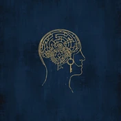

Tu material de estudio
Aquí encuentras los libros del estudiante de tu curso y la biblioteca de audio para entrenar el oído. Tu profesor te indica qué libro y lección corresponde a tu clase.
¿Qué quieres repasar?
Busca un tema o un libro y ve directo a la lección. Prueba con “pasado simple”, “entrevista de trabajo” o “aeropuerto”.

Core Basics — Fundamentos
4 librosCore Basics · Nivel 1
To Be or Not To Be. Identidad, presentaciones y lo esencial.
Abrir libroCore Basics · Nivel 2
Do I Know? Rutinas, preguntas y presente simple.
Abrir libroCore Basics · Nivel 3
Have I Been? Pasado, experiencias e historias.
Abrir libroCore Basics · Nivel 4
Let's Write. Primeros textos y redacción guiada.
Abrir libro
Core Practice — Talleres
6 librosPractice · Nivel 1
Listening y speaking con audio nativo en cada lección.
Abrir libroPractice · Nivel 2
Lectura y escritura: leyendas, mitos y misterios.
Abrir libroPractice · Nivel 3
Las 4 destrezas: debate y descubrimiento.
Abrir libroPractice · Nivel 4
Arte y literatura: talleres orales.
Abrir libroPractice · Nivel 5
Futuro y tecnología: lectura y escritura.
Abrir libroPractice · Nivel 6
Cultura pop y sociedad: dominio de las 4 destrezas.
Abrir libro
Core Grammar — Gramática
3 libros
Certification — Certificaciones y exámenes
6 librosCertification Path I · Gateway
Tu primera certificación: B1 Preliminary, IELTS 4.5–5.5 y TOEFL con drills cronometrados.
Abrir libroCertification Path II · Ascent
B2 First e IELTS 5.5–6.5: paráfrasis, distractores y escritura estructurada.
Abrir libroCertification Path III · Summit
CAE, CPE e IELTS 7.0+: matiz, registro y resistencia de examen.
Abrir libroCertification Prep · Intensivo
Manual de bandas: drills cronometrados, modelos Band 6/8 y simulacro final.
Abrir libroExam Prep · Vol. 1
Sintaxis avanzada y estrategia de examen.
Abrir libroExam Prep · Vol. 2
Vocabulario temático y práctica aplicada.
Abrir libro
Business — Inglés de negocios
3 librosBusiness Path I · Foundations
Inglés de oficina de supervivencia: llamadas, correos, juntas y clientes.
Abrir libroBusiness English Premium
Comunicación corporativa efectiva: pitch, juntas y reportes con audio nativo.
Abrir libroBusiness Path III · Influence
Persuasión, negociación, liderazgo y el sales pitch final.
Abrir libro